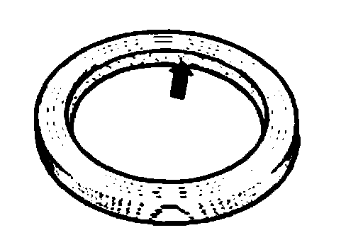
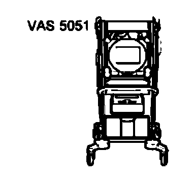

General Repair Instructions
General repair instructionsThe maximum possible care and cleanliness and proper tools are essential to ensure satisfactory and successful transmission repairs. The usual basic safety precautions also apply when performing vehicle repairs.
A number of generally applicable instructions for individual repair operations, which are otherwise mentioned at various points in the information, are summarized here.
General repair instructions
Special tools
A list of special tools and workshop equipment required for repair procedures can be found in "Special Tools and Equipment".
Transmission
^ After installing, check ATF level.
- Fill levels and specifications go to Capacities.
^ Do not run engine or tow vehicle with oil pan removed or when there is no ATF in the transmission.
^ If the transmission is removed from the vehicle, secure the torque converter to prevent it from falling out.
^ Thoroughly clean connecting points and surrounding areas and then loosen bolts.
^ When installing ensure that the alignment sleeves between the engine and transmission are correctly located.
^ Before installing transmission, check torque converter position.
^ Place removed parts on a clean surface. Cover parts to prevent soiling. Use plastic sheeting and paper. If necessary, use only cloth that is lint-free.
^ Only install clean parts- Remove packing from replacement parts immediately prior to installation and not before.
^ Carefully cover or plug unpacked components if repairs cannot be performed immediately.
Gaskets, sealing rings
^ Always replace O-rings, seals and gaskets.
^ Once a seal or gasket has been removed, check contact surface on housing or shaft for burrs and damage. Repair as necessary.

^ Before installing shaft-type oil seal, coat space between sealing lips with ATF.
^ Open side of oil seal faces oil.
^ Before installing oil seals, moisten circumference of seal and sealing lip with ATF or gear oil depending on seal location.
^ Moisten O-rings with ATF to prevent damage occurring to the rings during assembly.
^ Only use ATF for automatic transmission components. Other types of lubrication cause faults to occur in the transmission hydraulics.
^ After installing check ATF level.
Nuts and bolts
^ Tighten and loosen nuts and bolts for securing covers and housings in a diagonal sequence.
^ The tightening torques stated apply to unoiled nuts and bolts.
^ Clean threads of bolts that were applied with locking fluid using a wire brush. Apply locking fluid AMV1 85101 Al before reinstalling.
^ Use thread tap to remove remains of locking fluid from all threaded holes in which self-locking bolts are to be screwed. Otherwise there is a risk that the bolts will shear the next time they are removed.
^ Replace self-locking nuts and bolts.
Guided fault finding, On Board Diagnostic (OBD) and testing

^ Before repair work is performed on the automatic transmission, the fault cause should be determined as accurately as possible using vehicle diagnostic, testing and information system VAS 5051 in modes of operation "Guided fault finding", "Vehicle Self Diagnosis" and "Test instruments".